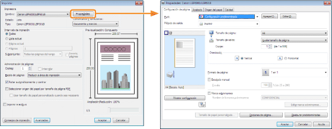
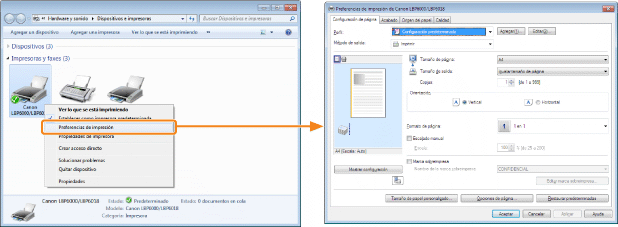
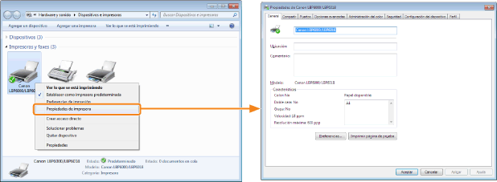

Podrá especificar las diversas preferencias de impresión en la pantalla de configuración del controlador de impresora.
Existen los siguientes métodos para abrir la pantalla de configuración.
Apertura desde una aplicación
Los valores especificados se aplicarán únicamente a los datos que se vayan a imprimir desde la misma aplicación. Si se sale de la aplicación, los valores modificados se restablecerán a los valores predeterminados.
|
Cómo abrir
(el procedimiento podría diferir en función de la aplicación que esté utilizando).
|

Apertura desde la carpeta de impresoras ( "Operaciones básicas/Diversas informaciones para Windows")
"Operaciones básicas/Diversas informaciones para Windows")
"Operaciones básicas/Diversas informaciones para Windows")<Pantalla de preferencias de impresión>
Podrá cambiar los valores predeterminados de las preferencias de impresión que se aplicarán a todos los datos.
|
Cómo abrir
Haga clic con el botón derecho del ratón en el icono de la impresora y, a continuación, seleccione [Preferencias de impresión] en el menú emergente.
|

<Pantalla de propiedades de la impresora>
Podrá especificar la configuración de los "Perfiles" que se añadirán al servidor, etc.
|
Cómo abrir
Haga clic con el botón derecho del ratón en el icono de la impresora y a continuación seleccione [Propiedades de impresora] o [Propiedades] en el menú emergente.
|

|
NOTA
|
|
Para obtener información detallada acerca de la configuración
Consulte la Ayuda.
Acerca de las fichas mostradas por Windows
Windows muestra las fichas siguientes. Para obtener más información, consulte la Ayuda de Windows.
Ficha [General]
Ficha [Compartir]
Ficha [Puertos]
Ficha [Opciones avanzadas]
Ficha [Administración del color]
Ficha [Seguridad]
Acerca del controlador de impresora
Las funciones del controlador de impresora podrían cambiar debido a las actualizaciones.
|